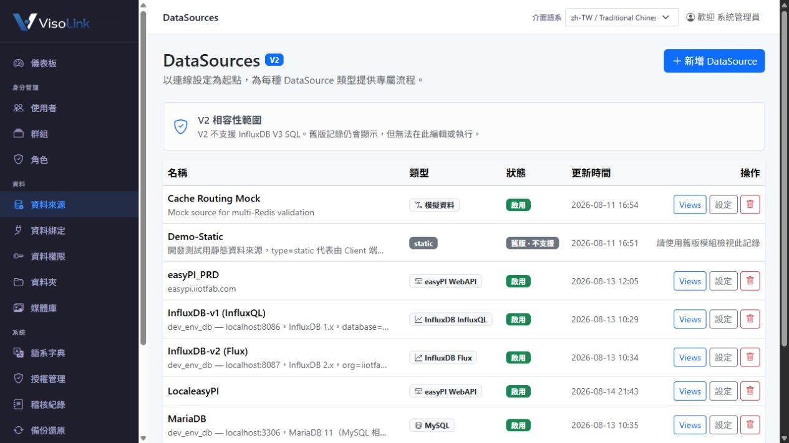
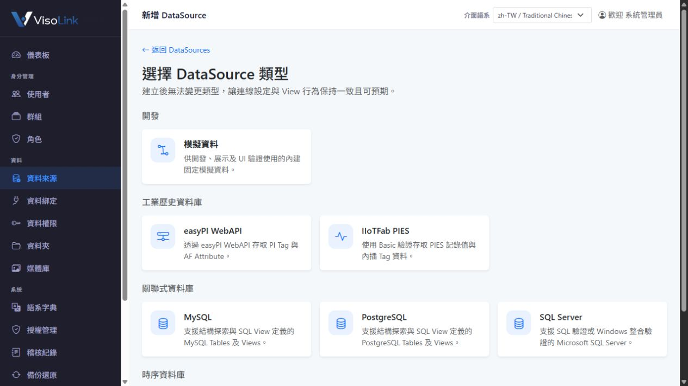
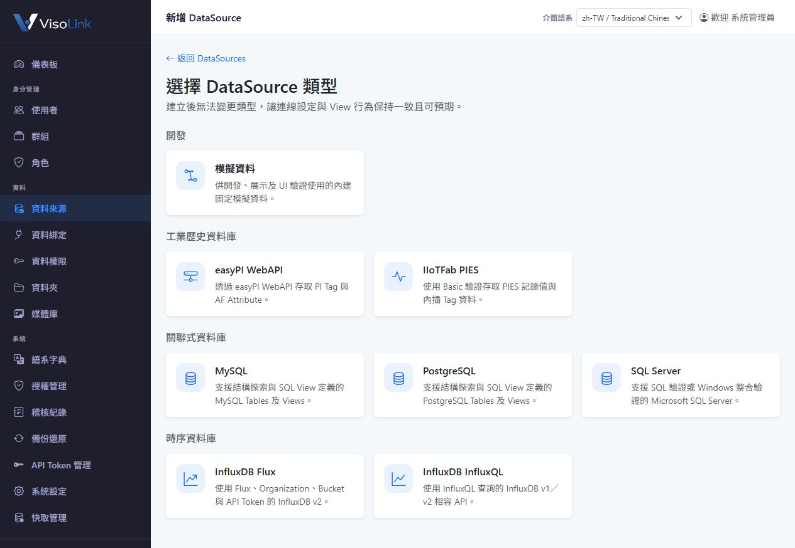
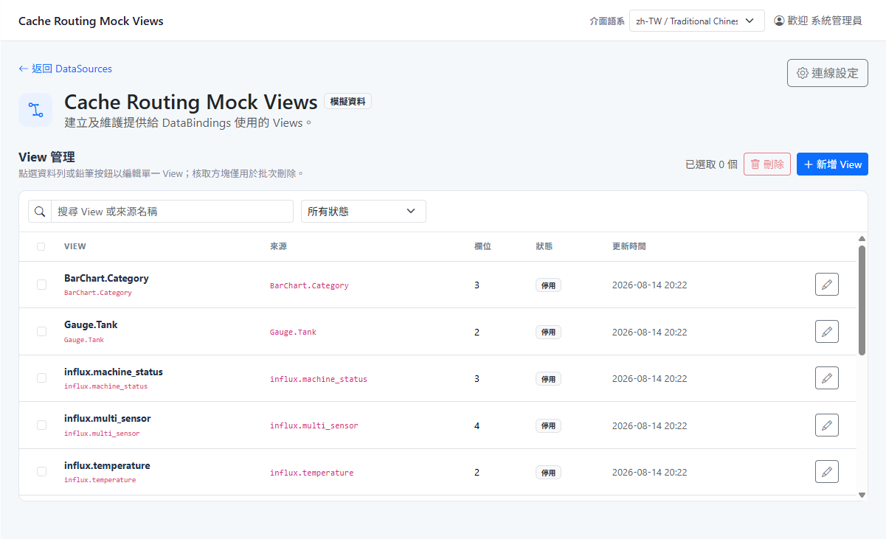
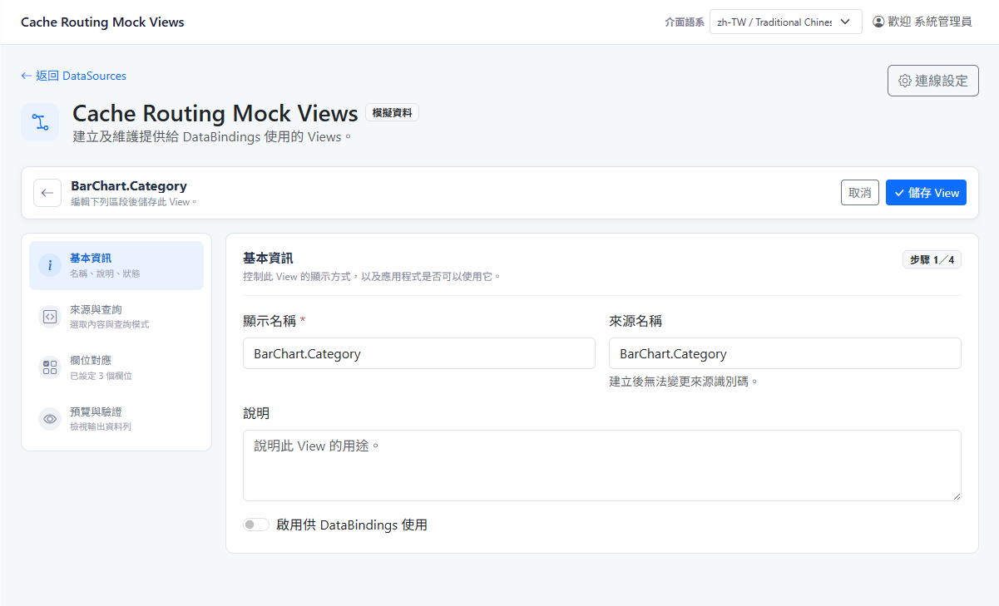

DataSource 資料來源與 View
DataSource 負責連接外部資料系統；View 將來源整理為 DataBinding 可以安全引用的資料結構。
瀏覽 DataSource 清單

- 點選「資料 → 資料來源」。
- 依名稱、類型與啟用狀態找到來源。
- 開啟來源進行連線設定，或進入 Views。
建立 DataSource 與選擇類型


- 點選新增 DataSource。
- 選擇 Mock、easyPI WebAPI、IIoTFab PIES、MySQL、PostgreSQL、SQL Server、InfluxDB Flux 或 InfluxQL。
- 確認類型後進入設定頁。
建立後不能變更類型；選錯時應建立正確類型並完成 View／DataBinding 移轉。
設定 DataSource 連線
- 輸入名稱與說明。
- 依類型填寫主機、資料庫、Organization、Bucket、API 位址或驗證方式等必要欄位。
- 密碼與 Token 只輸入在受保護欄位，不放入說明。
- 設定是否啟用，但先不要在未測試時投入正式使用。
欄位差異：各類型的必要欄位不同，以目前畫面標示為準。
測試 DataSource 連線
- 完成連線欄位後點選「測試連線」。
- 等待成功或失敗訊息。
- 失敗時依序檢查位址、連接埠、驗證資料、網路及來源服務。
- 測試成功後再儲存。
啟用與停用 DataSource
啟用後可供 View 與 DataBinding 使用；停用可能使既有 Runtime 元件顯示來源不可用。
- 開啟 DataSource 編輯頁。
- 切換「啟用此 DataSource」。
- 儲存後檢查清單狀態。
- 停用前先盤點相關 View、DataBinding 與 Display。
編輯與刪除 DataSource
- 開啟來源並修改允許的設定。
- 測試連線後儲存。
- 要刪除時先確認 View、DataBinding 與 Display 相依關係。
- 完成移轉後在清單點選刪除並確認。
建議：排查問題時先停用，不要直接刪除仍被引用的來源。
瀏覽 View 清單
從 DataSource 的 Views 進入，查看對外暴露的查詢定義、欄位與狀態。

- 在 DataSource 清單點選 Views。
- 確認 View 名稱與用途。
- 選擇建立、編輯、預覽或刪除。
已找到正確 View，並確認名稱、來源、欄位數與啟用狀態。
建立與編輯 View

選來源確認資料實體與時間欄位
定義欄位整理名稱、型別與用途
預覽驗證檢查樣本後才儲存
- 點選新增 View，或開啟既有 View Editor。
- 輸入 View 名稱及基本資訊。
- 依左側流程完成來源、查詢、欄位與預覽。
- 確認必要項目完成後儲存。
選擇 View 資料來源
不同 DataSource 類型可選擇 Table、View、Tag、AF Attribute、Measurement 或 API 資源。
- 在 View Editor 進入來源選擇。
- 搜尋並選取正確來源。
- 確認來源識別與時間資料。
- 繼續下一步設定查詢。
設定 View 查詢
依類型使用查詢建構器、SQL Console 或專屬設定。只查詢操作手冊使用者被授權且必要的資料。
- 設定篩選、時間條件或查詢內容。
- 限制不必要的資料量。
- 執行驗證，修正語法或來源錯誤。
- 確認查詢不包含敏感常數或憑證。
設定 View 欄位映射
- 選擇要暴露的來源欄位。
- 設定顯示名稱、資料型別及是否可選取。
- 指定時間欄位及必要 Metadata。
- 避免同名欄位與錯誤型別。
預覽與驗證 View
- 點選 Preview 載入樣本。
- 確認欄位名稱、型別、時間與數值。
- 檢查空值、無資料與查詢時間。
- 結果正確後儲存 View，並在 DataBinding 中使用。
預期結果：View 提供穩定且可辨識的欄位，DataBinding 不需要直接處理底層連線細節。